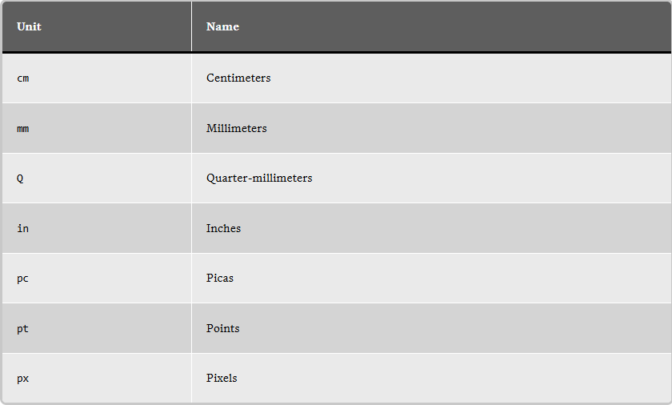
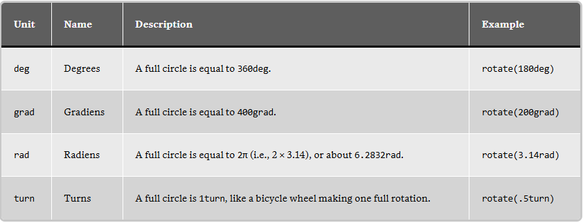
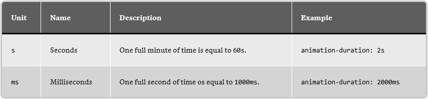
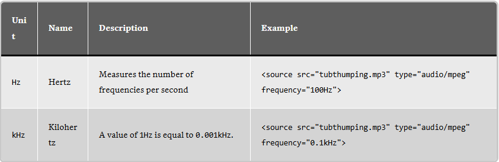
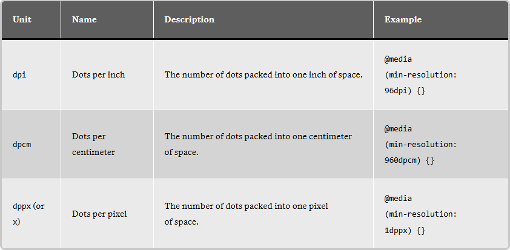
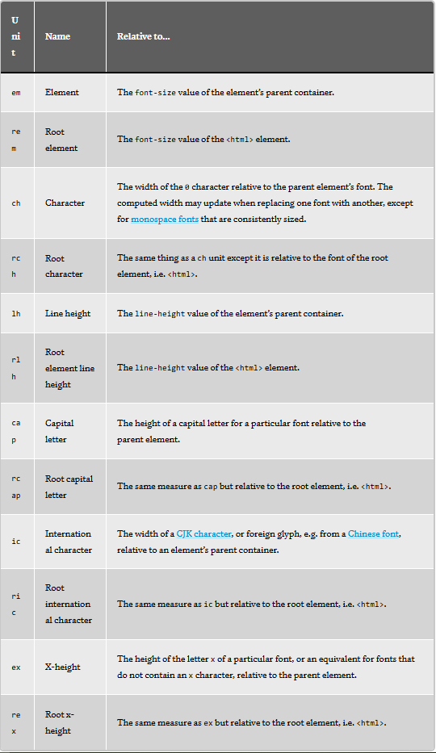
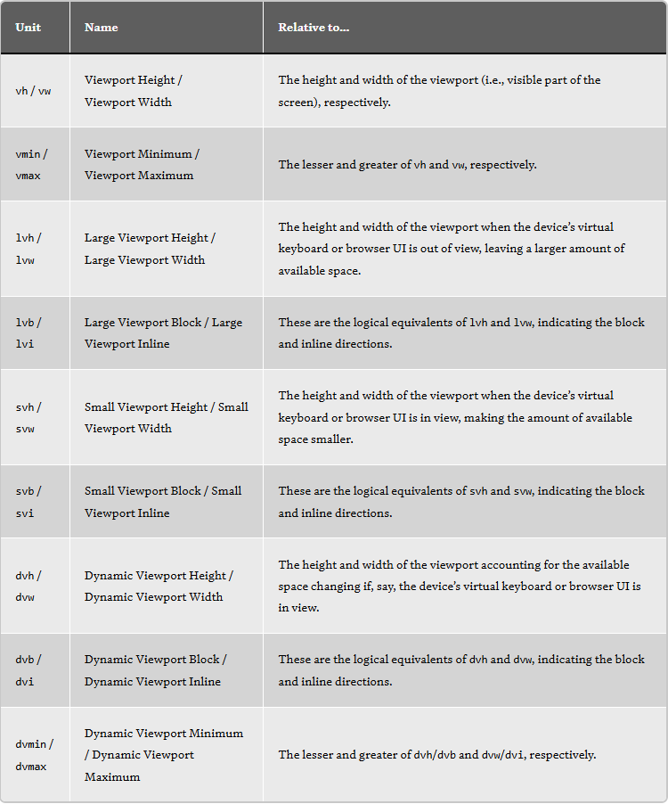
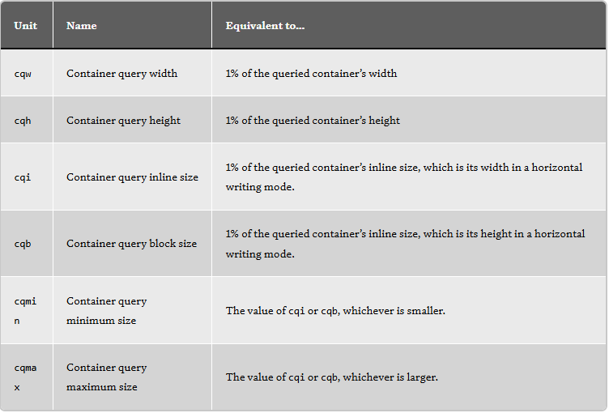

This container is pixels wide when the browser is pixels wide. Resize the browser to see it change.



For example:
aspect-ratio: 2 / 1; /* Ratio */
column-count: 3; /* Specifies a number of columns */
flex-grow: 1; /* Allows the element to stretch in a flex layout */
grid-column-start: 4; /* Places the element on a specific grid line */
order: 2; /* Sets the order of elemnents in a flex or grid layout */
scale: 2; /* The elementis scaled up or down by a factor */
z-index: 100; /* Element is placed in a numbered layer for stacking */
zoom: 0.2; /* The element zooms in or out by a factor */
rem and em unitsThis way, you can set things up in a way where changing the font-size value of the <html> or a parent element updates the font sizes of their descendants.
html {
font-size: 18px; /* Inherited by all other elements */
}
.parent {
font-size: 1rem; /* Updates when the `html` size changes */
}
.child {
font-size: 1em; /* Updates when the parent size changes */
}
It’s not a big deal or anything, but leaving off the units shortens the code a smidge, and anytime we’re able to write shorter code it’s an opportunity for faster page performance. The impact may be negligible, but we’re able to do it since 0 always computes to 0, no matter what unit we’re working with.
Container queries in general are so gosh-darn great for responsive layouts because they look at the size of the container and let us apply styles to its descendants when the container is a certain size.
.parent {
container: my-container / inline-size; /* Looks at width */
}
.child {
display: flex;
flex-direction: column;
max-width: 100cqi; /* 100% of the container */
}
/* When the container is greater than 600px wide */
@container my-container (width >= 600px) {
.child {
flex-direction: row;
max-width: 50cqi; /* 50% of the container */
}
}
use container units for responsive design, but that only does you good if you know you are in the context of a container. It’s possible, though, that you use the same component in different places, and one of those places might not be a registered container.
In that case, go with a percentage value because percentages are relative to whatever parent element you’re in, regardless of whether or not it’s a container. This way, you can declare an element’s size as 100% to take up the full space of whatever parent element contains it.
They are calculated based on the relative font size of specific elements.
Let’s start with em units and say we have an HTML element, a <div> with a .box_ver1 class, and we set its font size to 20px. That means any text inside of that element is 20px.
Font size: 20px
Great, now what if we decide we need additional text in the box, and give it a relative font size of 1.5em?
Font size: 20px Font-size: 1.5em
See how a font size of 1.5em is larger than the 20px text? That’s because the larger text is based on the box’s font size. Behind the scenes, this is what the browser is calculating:
20px * 1.5 = 30px
So, the relative font size is multiplied by the pixel font size, which winds up being 30px.
And guess what? rem units do the exact same thing. But instead of multiplying itself by the pixel font size of the parent container, it looks at the pixel font size of the actual <html> element. By default, that is 16px.
/* This is the browser's default font size */
html {
font-size: 16px;
}
.box {
font-size: 1.5rem; /* 16px * 1.5 = 24px */
}
And if we change the HTML element’s font size to something else?
html {
font-size: 18px;
}
.box {
font-size: 1.5rem; /* 18px * 1.5 = 27px */
}
What we get is a paragraph that is x characters wide. That means the text will break after the x. character, including spaces.
The big brown dog lazily jumped over the fence. AVeryLongSentence.
But note that the words themselves do not break. If the content is supposed to break after 10 characters, the browser will start the next line after a complete word instead of breaking the word into multiple lines, keeping everything easy to read.
The line-height unit (lh) looks at the line-height property value of the element’s containing (i.e., parent) element and uses that value to size things up.
.parent {
line-height: 1.5;
}
.child {
height: 3lh; /* 3 * 1.5 = 4.5 */
}
When would you use this? For setting an exact height on something based on the number of lines needed for the text.
For exaple: Temani Afif’s “CSS Ribbon” effect